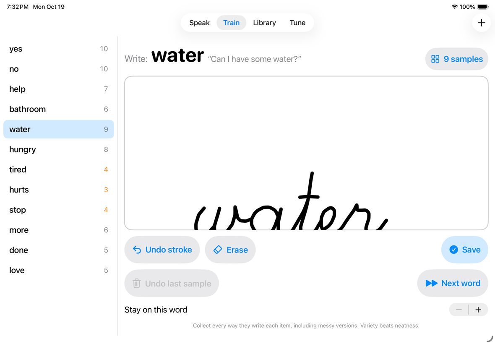
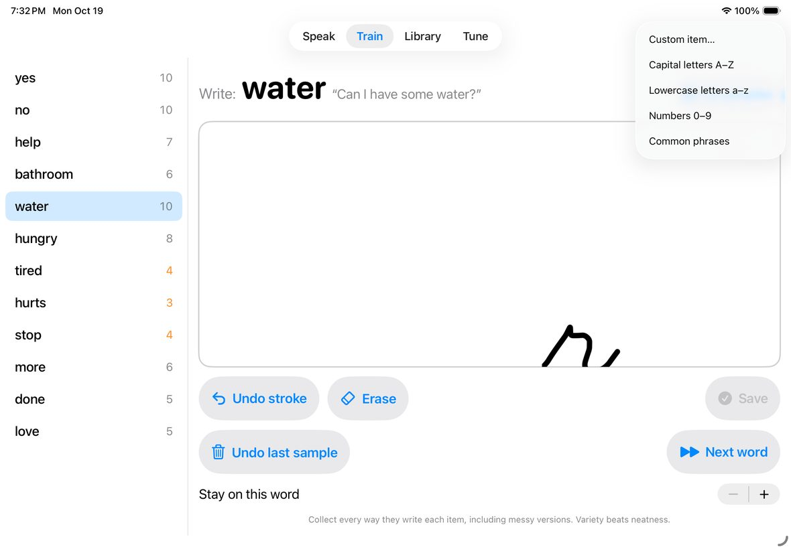
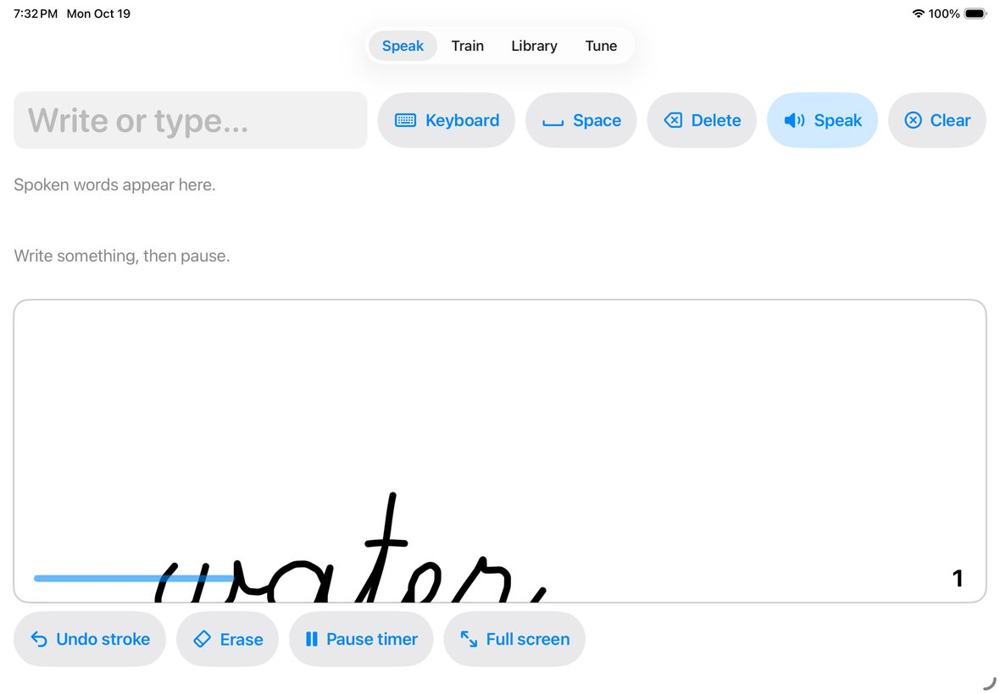
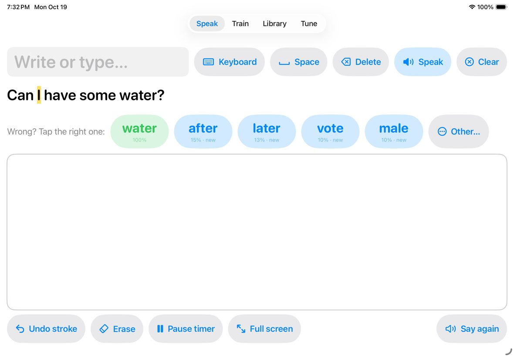
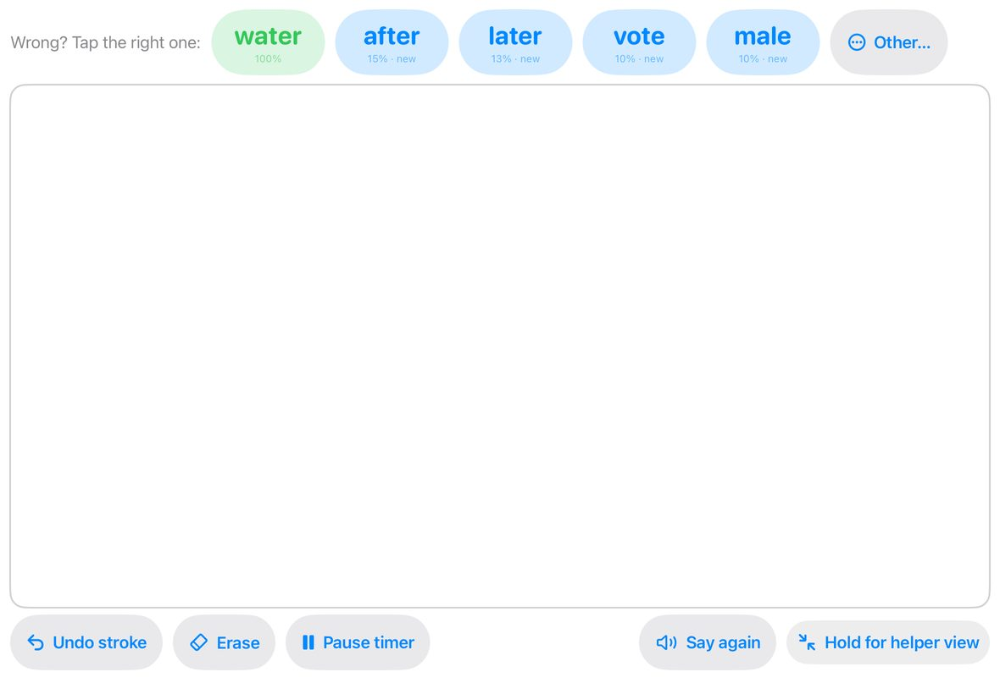
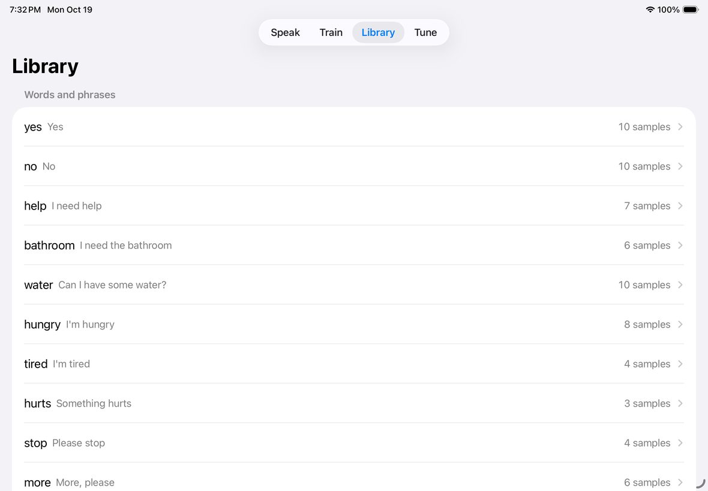
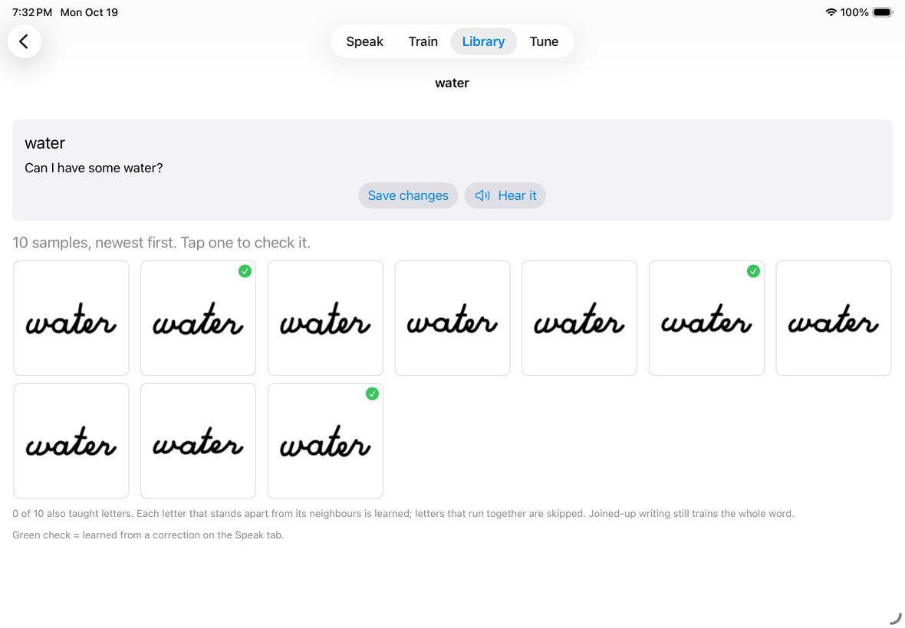
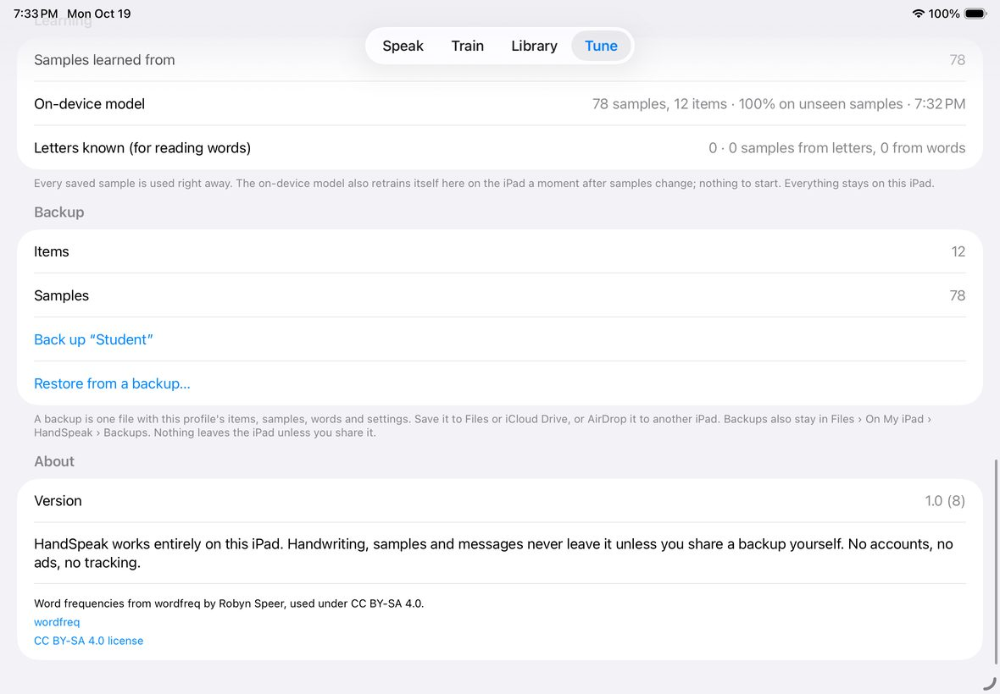

Inkspoken · Helper guide
Helping someone write to speak
Inkspoken learns one person's handwriting and says out loud what they write. This guide is for the parents, teachers and therapists who set it up and sit beside the writer.
Getting started
Inkspoken runs on iPad only. An Apple Pencil works best, but a finger works too.
- Install it. During testing it comes through Apple's TestFlight app. Open the invitation email on the iPad, tap View in TestFlight, then Install. New builds arrive in TestFlight automatically.
- Open Inkspoken. The four tabs along the top are Speak Train Library Tune.
- Start on Speak. Even before any training, Inkspoken can read neat handwriting using Apple's built-in reader. Training is what makes it work for handwriting nobody else can read.
Everything stays on the iPad. There are no accounts, no ads and no tracking. Handwriting leaves the iPad only if you share a backup yourself.
Teach it the writer's handwriting
The Train tab is where the writer gives examples. Each example is a sample. The more samples, the better it reads.

- Add things to learn. Tap + at the top right. Choose Common phrases (yes, no, help, bathroom…), Lowercase letters a–z, Capital letters A–Z, Numbers 0–9, or Custom item… for their own words and phrases.
- Pick an item from the list on the left. The word appears at the top: Write: water.
- Have the writer write it in the white box, their own way. Then tap Save. If Save samples automatically is on in Tune, it saves on its own after a short pause, and the countdown number shows how long is left.
- Repeat. Aim for 5 to 10 samples per item to start. Next word moves on; Undo last sample removes a bad one right away.

Words teach letters too
When the writer leaves small gaps between letters, every trained word also teaches its letters. That lets Inkspoken read new words it was never trained on, letter by letter. Phrases written across two lines work too. Letters that touch are skipped rather than guessed.
Write and speak
The Speak tab is where the writer talks. They write in the big box and stop. A blue bar shrinks under the writing and a number counts down the seconds. When it reaches zero, Inkspoken reads the writing and says it.


When it guesses wrong
Under the spoken line is Wrong? Tap the right one with other possibilities. Tapping the right one says it and saves that writing as a new sample, so the same mistake gets less likely. If none are right, tap Other… and type the word.
The buttons
| Button | What it does |
|---|---|
| Undo stroke | Removes the last line drawn. |
| Erase | Clears the writing box. |
| Pause timer | Stops the countdown so the writer can take their time. Tap Resume when they're done. |
| Say again | Repeats the last thing spoken. |
| Full screen | Gives the writer the whole screen (see below). |
| Keyboard Space Delete Speak Clear | For spelling. Letters build up in the Write or type… bar at the top; Speak says the whole message. You can also type into it. |
Full screen for the writer
Tap Full screen to hide the tabs and helper buttons and give the writer almost the whole iPad to write on. The guesses and the message still show above the box.

To get back, press and hold Hold for helper view for about a second. The button fills up while you hold it.
Check the samples
The Library tab lists everything that has been taught. One bad sample, like a stray scribble saved as “yes”, keeps matching the wrong things. Deleting it is the quickest way to improve accuracy.

- Words and phrases: tap one, then tap a sample to look at it closely and delete it if it's wrong. The caption also says which letters it taught.

- Letters and numbers: letters trained on their own, plus letters learned from words (“3 from words”). Open a letter to see the pieces cut from words, and remove any that aren't really that letter.
Settings
The Tune tab holds the settings. The ones you're most likely to change:
| Setting | When to change it |
|---|---|
| Pause before recognizing | How long Inkspoken waits after the writer stops before reading. Longer if they pause mid-word; shorter once they're quick. |
| Confidence to accept without asking | Lower it and Inkspoken speaks more often without asking; raise it and it shows choices more often. |
| Read untrained handwriting | Uses Apple's reader for words that haven't been taught. Turn it off if it keeps guessing words the writer didn't mean. |
| Apple Pencil only | Ignores fingers and a resting palm, so only the Pencil writes. |
| Voice, Speaking rate | Pick a voice and speed. Enhanced voices can be downloaded in iPad Settings › Accessibility › Spoken Content › Voices. |
| Profiles | One profile per writer. Each has its own words, samples and settings. |
| Run accuracy test | Checks each sample against the others and lists the items it confuses most. Collect more samples of those. |
Back up or share the training
At the bottom of Tune, tap Back up “Student”, then Save or send. Choose AirDrop, Save to Files or another app. Restore from a backup… brings it back, either as a new profile or added to the current one. Backups are also kept in the Files app under On My iPad › Inkspoken › Backups.

Tips that help most
- Collect every version. Messy, rushed and tired samples are worth more than neat ones, because that's what the writer will produce on a hard day.
- Only the writer writes. A helper's handwriting in the samples confuses it. Give each writer their own profile.
- Correct mistakes when they happen. Tapping the right choice on Speak is training, and it's the easiest kind.
- Small gaps between letters let words teach their letters, so new words can be read without training each one.
- Start with what matters. yes, no, help and bathroom first, with 10 or more samples each.
If something's off
| What you see | Try this |
|---|---|
| It says the wrong word | Tap the right choice under the spoken line. If the same mix-up keeps happening, add samples of both words and check the Library for bad samples. |
| Nothing gets read | Check for the orange “Timer paused” label and tap Resume. |
| It reads before the writer is done | Raise Pause before recognizing in Tune, or use Pause timer for long messages. |
| A trained word teaches no letters | The letters probably touch. Tap a sample in the Library: the caption says how many pieces it found. |
| Stuck in full screen | Press and hold Hold for helper view for a second. |
| The writing box looks squashed | Switch to another tab and back. Please tell us what you'd just done so we can fix it. |